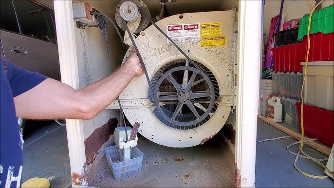
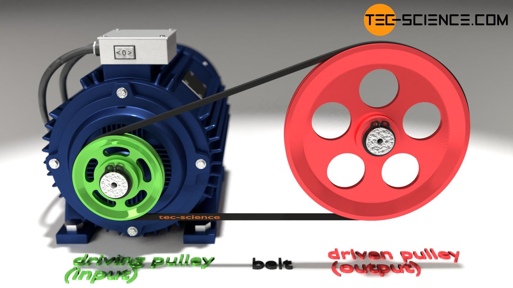
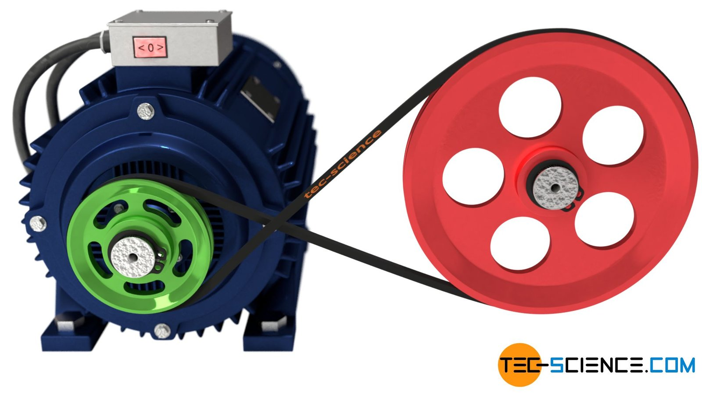
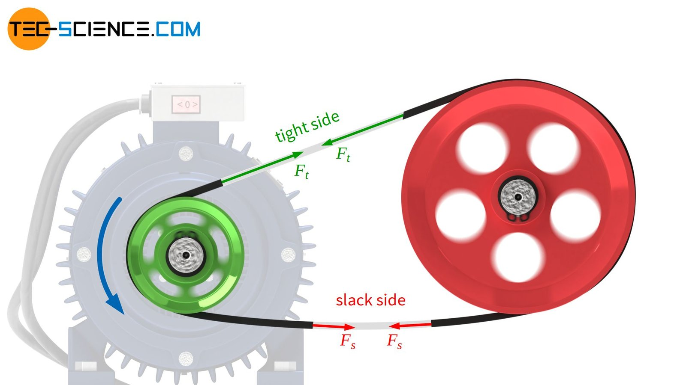
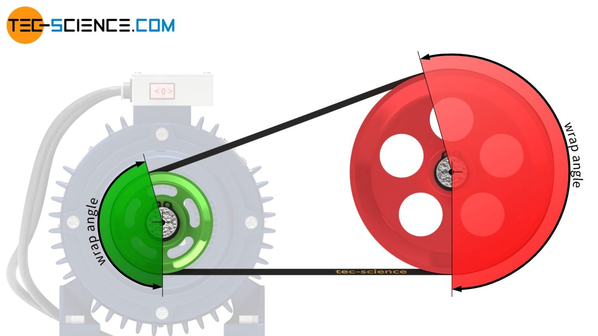
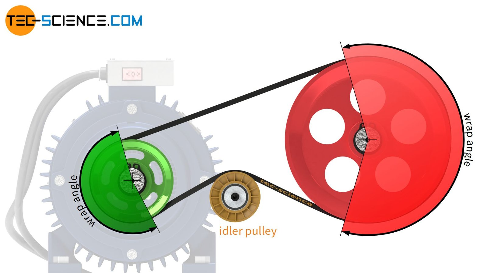
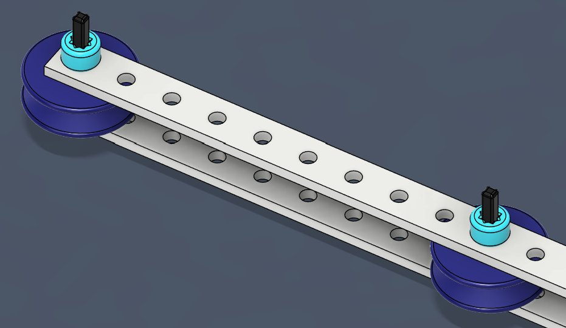
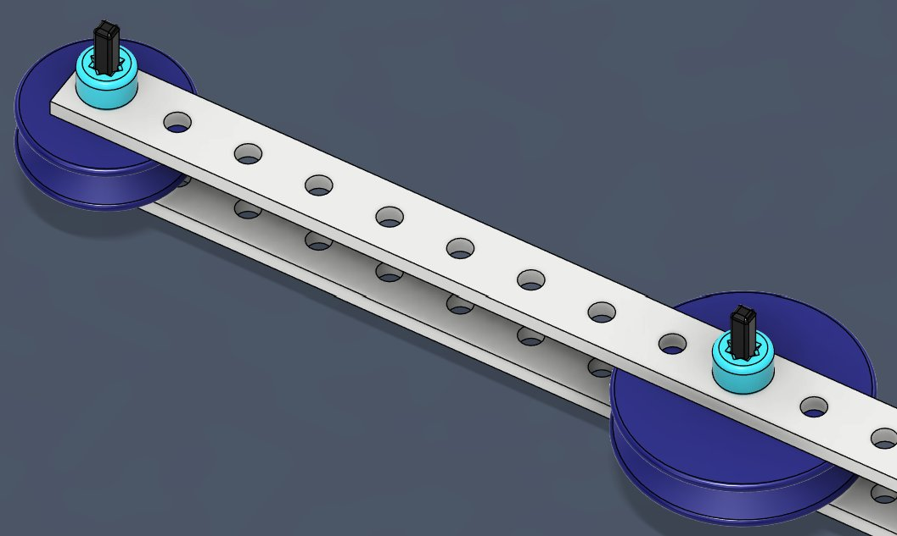
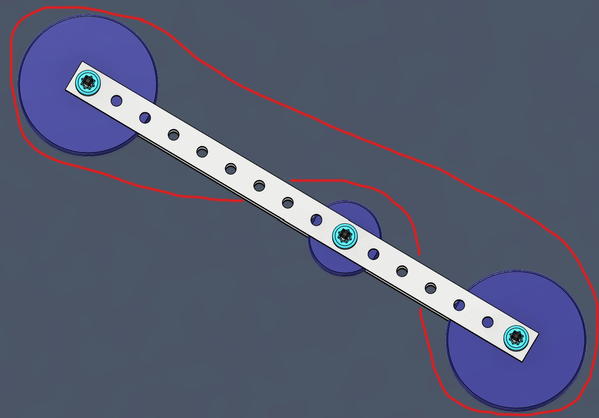
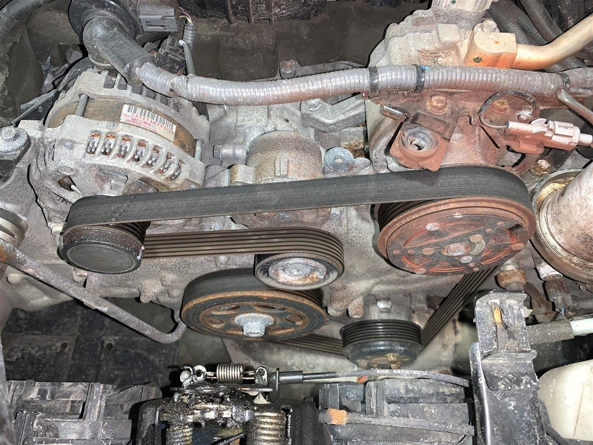

How belt drives move power through friction, and what engineers do to keep them from slipping.
This furnace blower uses a belt to carry power from a small motor pulley to the large fan.
Belts can transfer power over longer distances than gears can. They also run with less noise, less vibration, and less maintenance, and they don’t need lubrication.

Maybe the biggest benefit of a belt drive is that the belt is flexible. The flexibility absorbs a lot of noise, so belt drives are much quieter than gear drives during routine operation. Belts are also lightweight and easy to replace.

The driving pulley and the driven pulley turn in the same direction.

Crossing the belt between the pulleys reverses the direction of the driven pulley. Belts can also connect shafts that aren’t parallel.
Belt drives aren’t perfect. Their biggest weakness comes from the same thing that makes them work: friction.
Belt drives can create a lot of extra friction during operation. This isn’t necessarily a deal-breaker, but it wastes energy, so belt drives are less efficient than gear drives.
The extra friction also makes the belt heat up. That heat keeps belts from reaching the high speeds that gears can handle.
Belts can slip on their pulleys, but gears cannot. When might a little bit of slip actually be helpful?
A belt drive is friction-locked. The driving pulley pushes the belt through friction, and at the other end, the belt turns the driven pulley through friction.
This is when slip helps. If too much torque is applied, the belt can slip instead of breaking something, which prevents the drive from overloading.
Slip still has a cost: too much slipping wears the belt down.
As the belt turns around the driving pulley, the pulley pulls on the belt through friction. That pull travels along the tight side of the belt, which pulls on the driven pulley.
On the far side, the driving pulley pushes the belt toward the driven pulley. That lets a little slack form, so the slack side of the belt sags slightly.

The amount of contact a belt has with a pulley determines how much friction it gets, and how well it resists slipping.
The angle of the arc where the belt touches the pulley is called the wrap angle.
The maximum force a belt can transmit is limited by the smaller wrap angle. That is usually on the smaller pulley.

An idler pulley presses on the belt to bend it farther around the other pulleys. That increases the wrap angle on the small pulley.
An idler pulley can also be used to add tension to the belt. When it does that job, it is called a tensioner pulley.

In a belt drive, which pulley usually limits the maximum force the belt can transmit?
Did the belt slip? How can you tell from your marks?

Repeat the 10-turn test with each of these pulley pairs. Each time, watch whether the amount of slip changes.
Now try moving the pulleys closer together or farther apart. How does changing the tension affect slip?

Set up two large pulleys and add a small idler pulley between them. Route the rubber band so that it wraps around the outside of the idler, as shown in red.
Run the 10-turn test again. Does the idler pulley help with slippage? Why?

A bigger wrap angle gives the belt more contact with the pulley, so there is more friction to grip with.
A tighter belt presses harder against the pulleys. Moving pulleys apart or adding a tensioner increases tension.
Every time the belt slips, some of the input energy turns into heat and wear instead of motion.
A belt keeps slipping on a small driving pulley. Which change would most likely reduce the slip?
Belt trains can be more complicated than a single driving pulley and a single driven pulley. In a car engine, one long serpentine belt snakes around many pulleys.
One driver, the engine’s crankshaft, powers several driven components at once, such as the alternator and the power steering pump. Idler and tensioner pulleys keep the belt tight and wrapped around each one.
If this one belt snapped, what would happen to the car?

Why might some machines use belts instead of gears, even though belts can slip?
Think about the HVAC blower and the car engine from today.